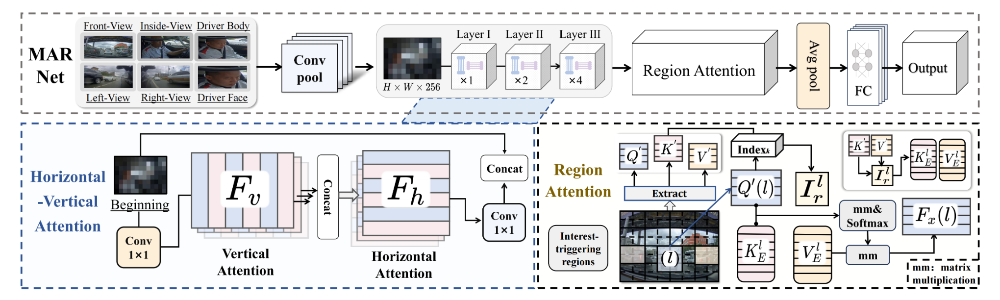

Publications
(* indicates equal contribution, # corresponding author)FMDNet: Feature-attention-embedding-based Multimodal-fusion Driving-behavior-classification Network
Wenzhuo Liu, Jianli Lu, Junbin Liao, Yicheng Qiao#, Guoying Zhang#, Jiayin Zhu, Bozhang Xu, and Zhiwei Li
in IEEE Transactions on Computational Social Systems (TCSS)
[Paper] [BibTex] [Code]
In this paper, we propose a novel driving behavior classification network named Feature-attention-embedding-based Multimodal-fusion Driving-behavior-classification Network (FMDNet) for achieving accurate driving behavior detection.
Wenzhuo Liu, Jianli Lu, Junbin Liao, Yicheng Qiao#, Guoying Zhang#, Jiayin Zhu, Bozhang Xu, and Zhiwei Li
in IEEE Transactions on Computational Social Systems (TCSS)
[Paper] [BibTex] [Code]

TextNeRF: A Novel Scene-Text Image Synthesis Method based on Neural Radiance Fields
Jialei Cui, Jianwei Du, Wenzhuo Liu, Zhouhui Lian#
in CVPR, 2024
[Paper] [BibTex] [Code]
In this paper, we introduce a novel method that utilizes Neural Radiance Fields (NeRF) to model real-world scenes and emulate the data collection process by rendering images from diverse camera perspectives, enriching the variability and realism of the synthesized data.
Jialei Cui, Jianwei Du, Wenzhuo Liu, Zhouhui Lian#
in CVPR, 2024
[Paper] [BibTex] [Code]
HiH: A Multi-modal Hierarchy in Hierarchy Network for Unconstrained Gait Recognition
Lei Wang, Yinchi Ma, Peng Luan, Wei Yao, Congcong Li, Bo Liu#
in Arxiv, 2024
[Paper] [BibTex] [Code]
We present a multi-modal Hierarchy in Hierarchy network (HiH) that integrates silhouette and pose sequences for robust gait recognition.
Lei Wang, Yinchi Ma, Peng Luan, Wei Yao, Congcong Li, Bo Liu#
in Arxiv, 2024
[Paper] [BibTex] [Code]